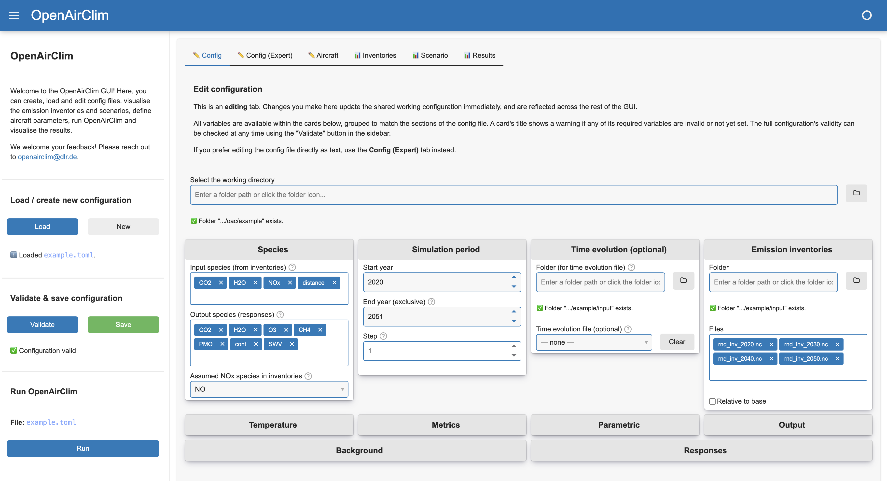

Graphical User Interface

Since v0.17, OpenAirClim ships with an optional graphical user interface (GUI). The GUI provides a visual way to create, load and edit configuration files, inspect input data, run simulations and explore results, without having to write or edit TOML by hand or work in a python console.
The GUI is in active development. If you have any suggestions on improvement, please reach out to openairclim@dlr.de or add an issue on GitHub.
Why use the GUI?
The GUI is particularly useful for setting up and sanity-checking an OpenAirClim simulation. It provides functionality to:
Edit config files: use an existing config file as a baseline or start from scratch, editing using a form with inline field descriptions or making changes to the raw TOML directly. The GUI provides feedback to validity without having to run OpenAirClim.
Visualise emission inventories: compare the vertical and latitudinal profiles of various emission inventories.
Visualise scenarios: visualise how emissions evolve over time, including any normalisation or scaling applied via a time evolution file. For emission inventories with multiple aircraft identifiers, understand how the global fleet changes over time.
Define aircraft parameters: define or derive aircraft and fuel parameters required for the simulation. This is particularly important for the analysis of contrails.
View results: load a completed simulation’s output NetCDF file and explore the results as interactive plots.
Because every tab reads from and writes to the same underlying configuration, changes made in one tab (e.g. adding an emission inventory, changing the simulation period) are immediately reflected in the others, making it easier to catch configuration mistakes before running OpenAirClim.
Note
The GUI is a convenience layer around the existing OpenAirClim configuration and simulation workflow. It does not replace the underlying .toml configuration format - files created or edited in the GUI remain as standard OpenAirClim config files that can also be used from the command line or in a python script. Power users will generally find that it remains easier to set up simulations using the conventional methods, rather than through the GUI.
Installation
The GUI requires additional dependencies on top of a standard OpenAirClim installation. See Installing the GUI for the commands to install these dependencies with conda or pip.
Running the GUI
Once the dependencies are installed, launch the GUI from the command line. Make sure that you have the right environment active in the console.
oac-gui
(equivalently, python -m openairclim.gui)
This starts a local Panel server and opens the GUI in your default web browser. You can pre-load a config/results file or change the port that the server runs on using optional arguments, i.e.:
oac-gui --config path/to/config.toml --results path/to/results.nc --port 5006
The GUI can also be launched from within Python:
from openairclim.gui import launch
launch(config_path="path/to/config.toml", results_path="path/to/results.nc")
Typical workflow
The sidebar, visible on every tab, drives the overall workflow:
Select a working directory. All relative paths inside a configuration (emission inventory, response and background directories, output directory) are resolved against this folder.
Load an existing configuration file, or start a new blank one. Loading a file automatically derives the working directory from its location and runs full validation.
Edit the configuration across the Config, Inventories, Scenario and Aircraft tabs. Edits made in one tab are immediately visible in the others, since they all share the same underlying configuration.
Validate. The Config tab’s card titles show a ⚠️ warning for any section that is missing required data; the sidebar’s Validate button runs the same checks OpenAirClim itself would run before a simulation, including that every referenced file actually exists.
Save the configuration to a .toml file once it validates successfully.
Run OpenAirClim directly from the sidebar, then switch to the Results tab to explore the output.
Upcoming features
The GUI is in active development. The following features are top of the development list. Please get in touch to suggest other features using the email above, or by opening an issue on GitHub.
Inventory editing: shift emission inventories in latitude, longitude or altitude; introduce or remove aircraft identifiers; select only certain areas. Will be developed in tandem with gedai.
Time evolution editing: modify evolution of emissions, emission indices and fleet distribution over time.
Improve performance for large emission inventories: currently, opening (very) large emission inventories requires a lot of memory and can take a long time or crash the GUI.